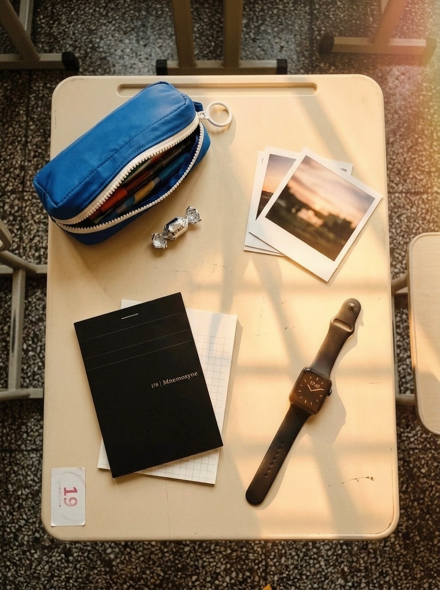
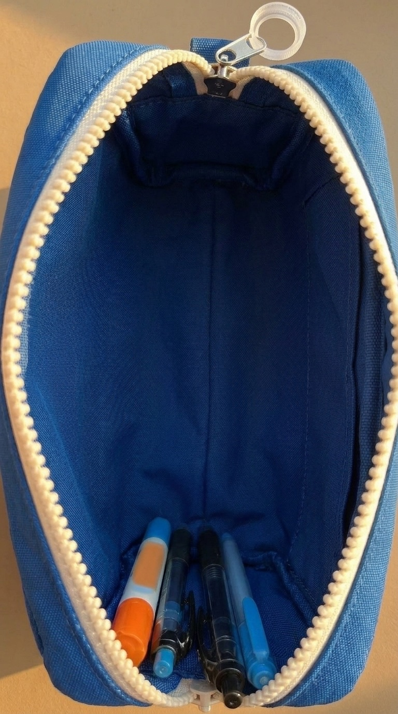

POLAROID · #01
“答应自己要去的地方，无论多远，我都想站在你身旁一起看见雪山与倒影。”

高原湖畔01
POLAROID · #02
“天在将黑未黑时最美，你在我身边吹风的样子，比粉紫色的晚霞更动人。”

暮色甲板02
POLAROID · #03
“我们要散步，把八分钟的路绕成四十分钟，走到整片落日海岸线的尽头。”

金色海岸03
POLAROID · #04
“车窗是流动的取景器。只要你靠在肩头，经过的山湖都是只放给我们看的电影。”

黄昏列车04
POLAROID · #05
“镜头失焦的时候光斑会变成温柔的圆，就像那天站在窗前看烟火时你的眼睛。”
失焦烟火05
POLAROID · #06
“在傍晚、晚风、余晖和路灯下，在你飘动的发丝间——和你一起浪费时间，是最美妙的事。”

路灯晚风06